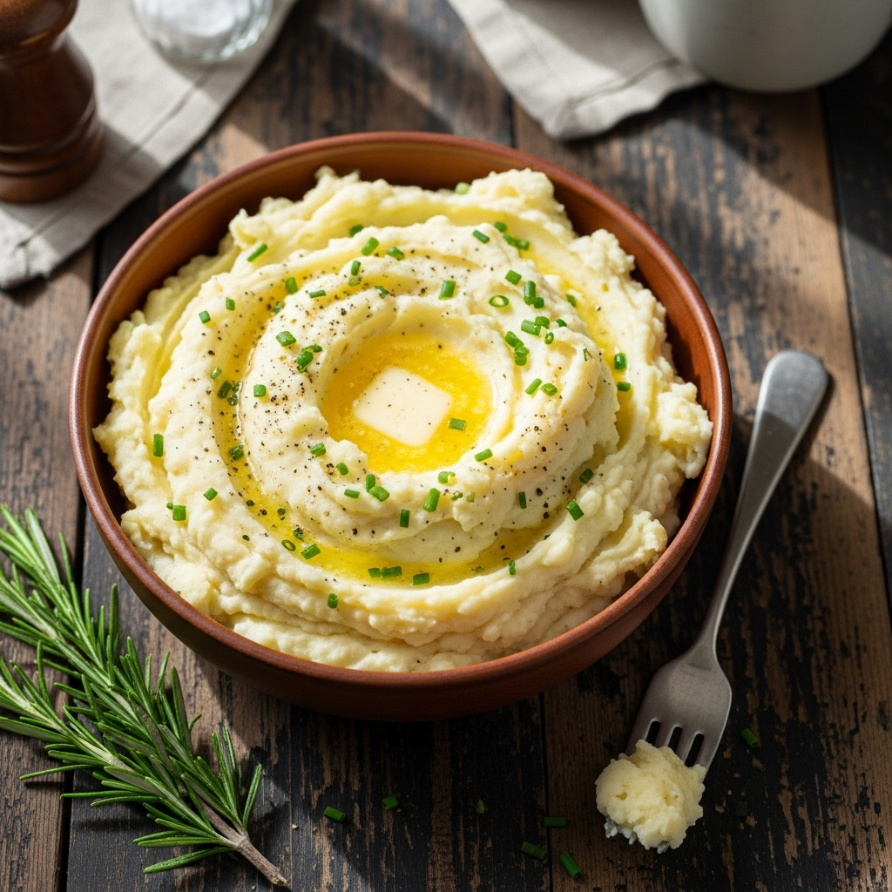

Mashed Potatoes

Description
This creamy mashed potatoes recipe is a classic side dish that pairs well
with any meal.
Ingredients
- 2 pounds potatoes, peeled and cut into chunks
- 1/2 cup milk
- 1/4 cup butter
- Salt and pepper to taste
- Optional: garlic powder or fresh herbs for extra flavor
Instructions
-
Boil the potatoes in a large pot of salted water until tender, about
15-20 minutes.
- Drain the potatoes and return them to the pot.
- Add the milk and butter to the potatoes.
-
Use a potato masher or electric mixer to mash the potatoes until smooth
and creamy.
- Season with salt and pepper to taste.
- If desired, add garlic powder or fresh herbs for extra flavor.
- Serve warm as a side dish.
Home